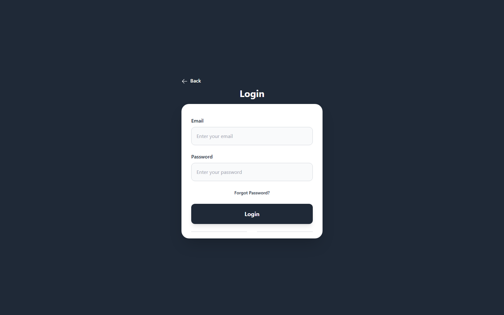
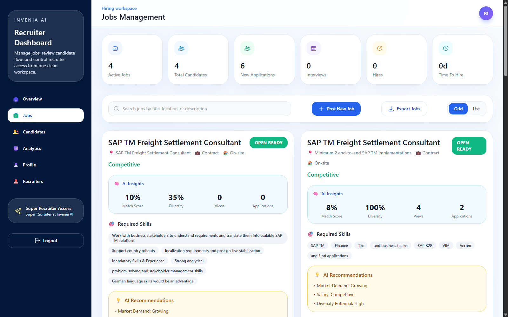

Jobs
1
Current live job seed used for the screenshots.
The recruiter portal controls the hiring pipeline. In the current build, aptitude, technical, and coding can be required or optional, while the AI interview stays compulsory and produces a report for later review.
At a glance
The portal is built to define the screening flow before candidates ever start.
Title, description, skills, salary, location, type, and benefits.
Aptitude, technical, and coding can be marked compulsory or optional.
Gemini creates unique questions from the job description and skills.
Candidates reach the interview report and analytics for recruiter review.
Step 1
Recruiter login keeps the workflows separate from the candidate portal.
Open the live app, choose the Recruiter card, and log in with recruiter credentials. The current production setup uses the super recruiter account for admin-level access.

Step 2
The jobs tab and candidates tab are the key operational views.

Start with the active jobs list. It gives a quick snapshot of title, location, salary range, applicant count, and the matching analysis. From here, recruiters can open the create job modal or edit an existing job.
Step 3
This is where the recruiter decides what is compulsory and what can be optional.
The create job modal lets the recruiter enter job details and then configure aptitude, technical, coding, and interview stages. Aptitude, technical, and coding can be optional or compulsory. The AI interview remains compulsory.

Assessment controls
These are the controls that shape the candidate journey.
Step 4
The candidates tab shows pipeline information and report details when available.

When the candidate finishes the interview, the report becomes visible in the candidate detail panel. It contains the score, question analysis, strengths, gaps, and recommendations.
Recruiter checklist
This keeps the screening flow consistent for every applicant.